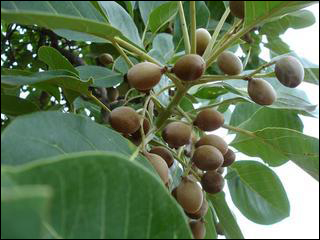

Myrobalan Tree
Terminalia bellirica, known as baheda, bahera, behada, beleric or bastard myrobalan (Arabic: beliledj ,بليلج borrowed from Middle Persian Balilag), Persian بليله (Balileh), Sanskrit: Bibhitaka बिभीतक, Aksha अक्ष) is a large deciduous tree in the Combretaceae family. It is common on the plains and lower hills in South and Southeast Asia, where it is also grown as an avenue tree. The basionym is Myrobalanus bellirica Gaertn. (Fruct. Sem. Pl. 2: 90, t. 97. 1791). William Roxburghtransferred M. bellirica to Terminalia as "T. bellerica (Gaertn.) Roxb.". This spelling error is now widely used, causing confusion. The correct name is Terminalia bellirica (Gaertn.) Roxb.
- In traditional Indian Ayurvedic medicine, Beleric is known as "Bibhitaki" (Marathi: "Behada or Bhenda") (Terminalia bellirica).
- Its fruit is used in the popular Indian herbal rasayana treatment triphala. In Sanskrit it is called bibhītaka बिभीतक.
- In India, Neemuch; a town in Malwa Region of Madhya Pradesh is a major trading centre of skinless baheda and entire fruits of T. bellirica.